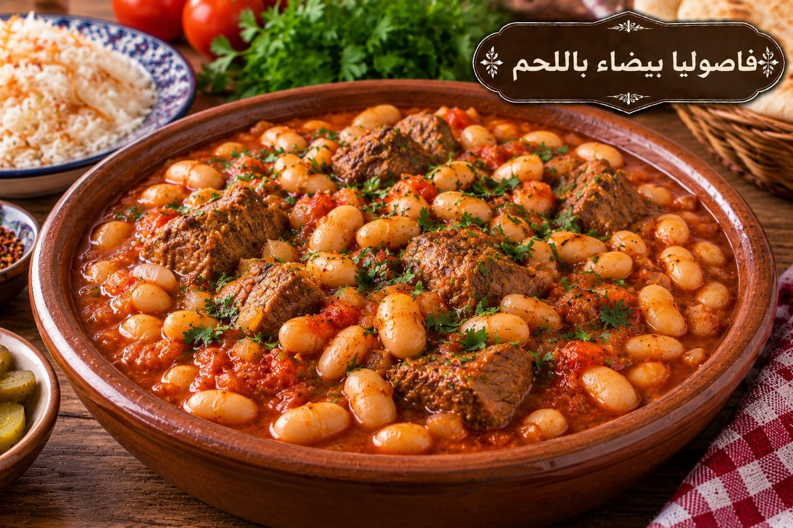

فاصوليا بيضاء باللحم
يخنة فاصوليا بصلصة الطماطم

مقادير فاصوليا بيضاء باللحم
- 2 كوب فاصوليا بيضاء يابسة منقوعة ليلة
- 500 غ لحم مكعبات
- 1 بصلة
- 2 كوب عصير طماطم
- 2 ملعقة كبيرة معجون طماطم
- 1½ ملعقة صغيرة ملح
- ½ ملعقة صغيرة فلفل أسود
- 1 ملعقة صغيرة بهار مشكل
- 6 أكواب ماء أو مرق تقريبًا
طريقة عمل فاصوليا بيضاء باللحم
- صفي الفاصوليا المنقوعة واسلقيها في ماء جديد حتى تصبح شبه ناضجة ثم صفيها.
- اسلقي اللحم مع البصل وأزيلي الرغوة حتى يطرى، واحتفظي بالمرق.
- أضيفي عصير الطماطم والمعجون والفاصوليا والبهارات إلى اللحم.
- أضيفي من المرق ما يكفي لتغطية المكونات واتركيها على نار هادئة 30–40 دقيقة حتى تنضج الفاصوليا ويتماسك المرق.
- أضيفي الملح في المرحلة الأخيرة وعدلي القوام بالماء الساخن عند الحاجة.